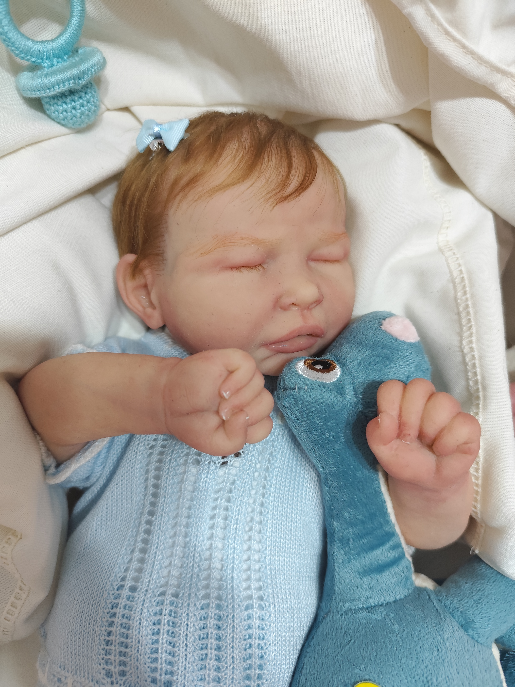
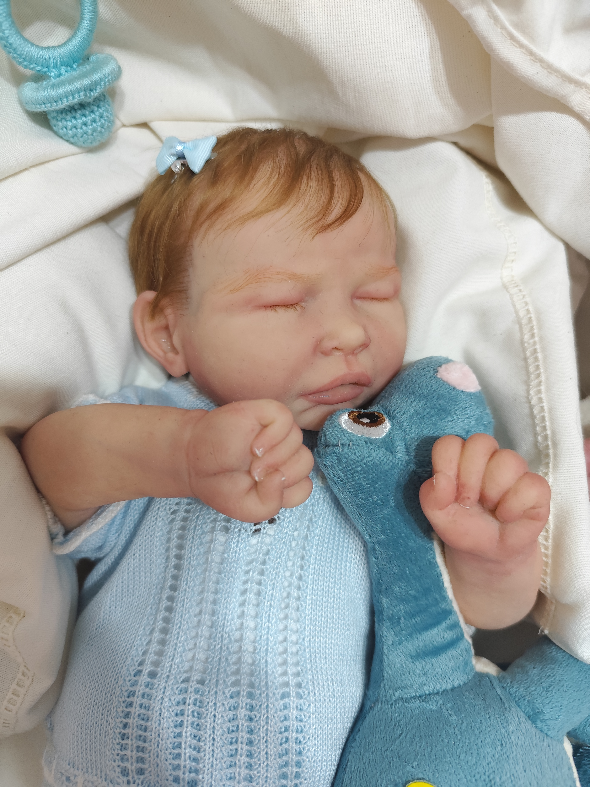
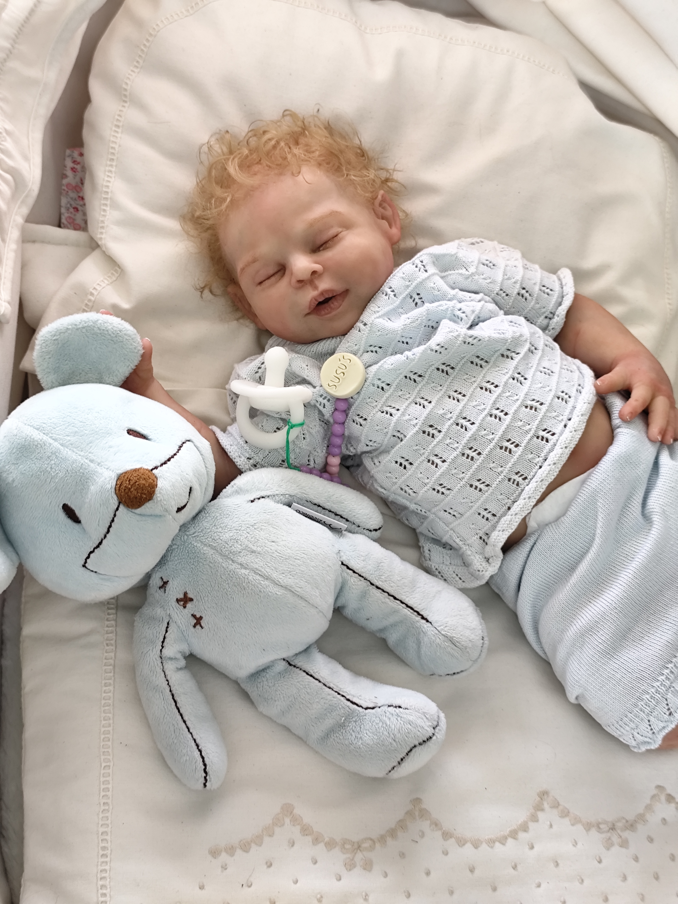
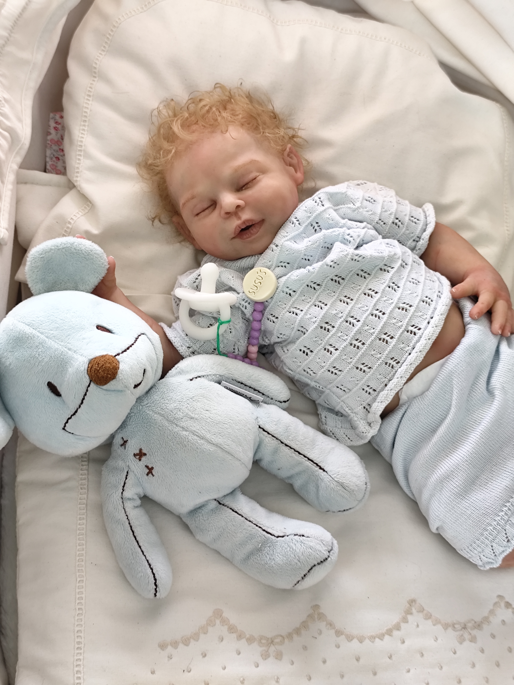
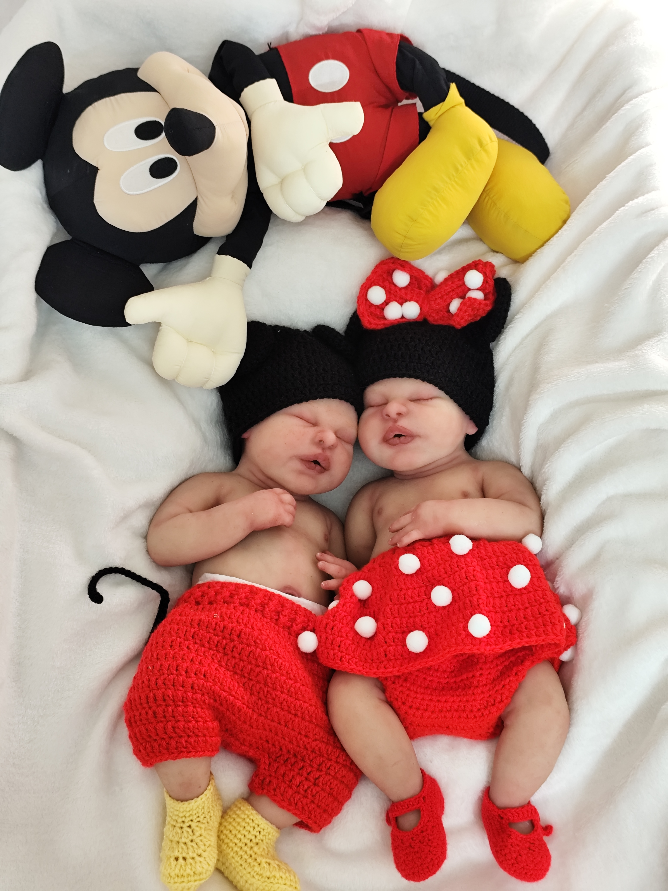
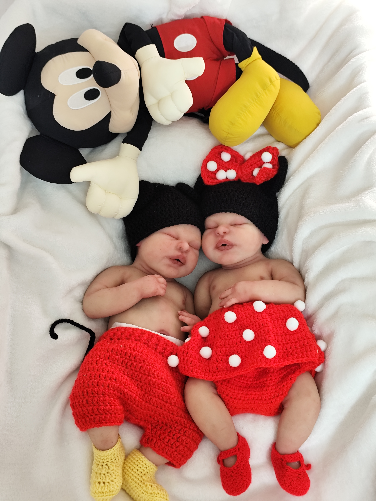
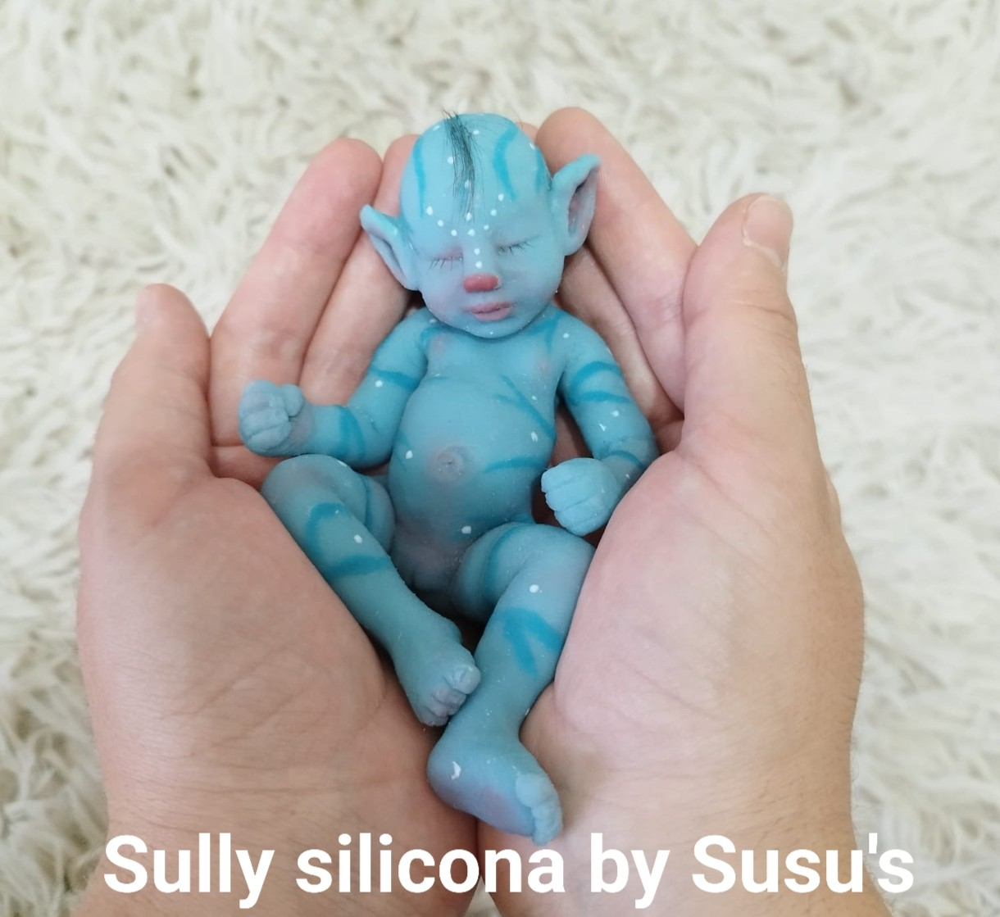
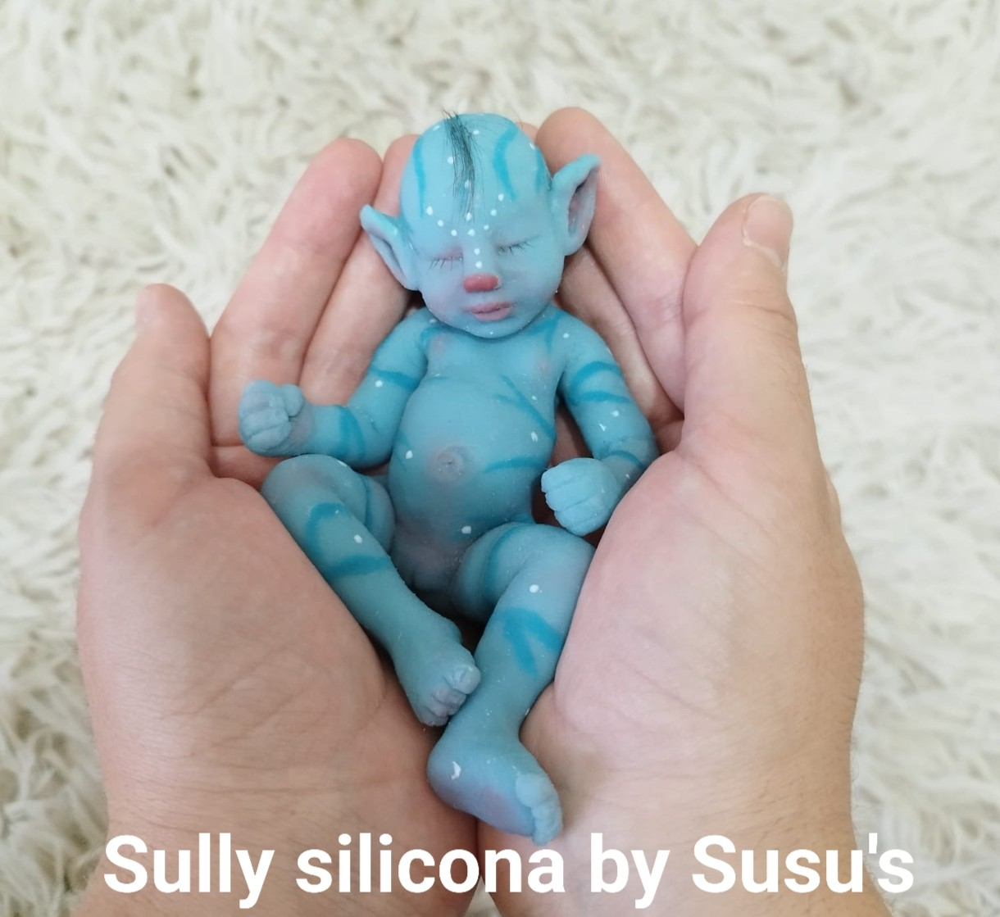

Silicona: modelos exclusivos
Ofelia

 



Silicona Malvavisco de la más alta calidad, lo que quiere decir que es extrablanda, flexible y es la única silicona que crea en la bebé arruguitas que la hacen parecer piel real,tiene una durabilidad excelente y si la cuidas tendrás una bebe preciosa por muchísimos años. Es una bebé llena de detalles, tiene su boquita abierta para aceptar chupete real, biberón... la lengua se puede colocar en distintas posiciones para cambiar su gesto y aportar realismo, sus cejas son pintadas y las pestañas injertadas, puede llevar el pelo injertado,para más realismo, pintado o calvita. Se puede bañar. Mide 50 cm y pesa 3´500kg, se puede hacer en niño o en niña. Se entrega con un chupete, chupetero, pañal, peluche, ropa de repuesto, pijama, body, calcetines, cositas para el pelo, manta, certificado de nacimiento,hoja de cuidados, certificado de autenticidad y alguna sorpresa. Para más información contacte por Whatsapp.
Martina


 

Silicona Malvavisco de la más alta calidad, lo que quiere decir que es extrablanda, flexible y es la única silicona que crea en la bebé arruguitas que la hacen parecer piel real,tiene una durabilidad excelente y si la cuidas tendrás una bebe preciosa por muchísimos años. Es una bebé llena de detalles, tiene su boquita abierta para aceptar chupete real, biberón... la lengua se puede colocar en distintas posiciones para cambiar su gesto y aportar realismo, sus cejas son pintadas y las pestañas injertadas, puede llevar el pelo injertado,para más realismo, pintado o calvita. Se puede bañar. Mide 52 cm y pesa 3´500kg, se puede hacer en niño o en niña. Se entrega con un chupete, chupetero, pañal, peluche, ropa de repuesto, pijama, body, calcetines, cositas para el pelo, manta, certificado de nacimiento,hoja de cuidados, certificado de autenticidad y alguna sorpresa. Para más información contacte por Whatsapp.
Ohana
 

Silicona Malvavisco de la más alta calidad, lo que quiere decir que es extrablanda, flexible y es la única silicona que crea en la bebé arruguitas que la hacen parecer piel real,tiene una durabilidad excelente y si la cuidas tendrás una bebe preciosa por muchísimos años. Es una bebé llena de detalles, tiene su boquita abierta para aceptar chupete real, biberón... la lengua se puede colocar en distintas posiciones para cambiar su gesto y aportar realismo, sus cejas son pintadas y las pestañas injertadas, puede llevar el pelo injertado,para más realismo, pintado o calvita. Se puede bañar. Mide 45 cm y pesa 2´400kg, se puede hacer en niño o en niña. Se entrega con un chupete, chupetero, pañal, peluche, ropa de repuesto, pijama, body, calcetines, cositas para el pelo, manta, certificado de nacimiento,hoja de cuidados, certificado de autenticidad y alguna sorpresa. Para más información contacte por Whatsapp.
Daniel


Silicona Malvavisco de la más alta calidad, lo que quiere decir que es extrablanda, flexible y es la única silicona que crea en la bebé arruguitas que la hacen parecer piel real,tiene una durabilidad excelente y si la cuidas tendrás una bebe preciosa por muchísimos años. Es una bebé llena de detalles, tiene su boquita abierta para aceptar chupete real, biberón... la lengua se puede colocar en distintas posiciones para cambiar su gesto y aportar realismo, sus cejas son pintadas y las pestañas injertadas, puede llevar el pelo injertado,para más realismo, pintado o calvita. Se puede bañar. Mide 45 cm y pesa 2´400kg, se puede hacer en niño o en niña. Se entrega con un chupete, chupetero, pañal, peluche, ropa de repuesto, pijama, body, calcetines, cositas para el pelo, manta, certificado de nacimiento,hoja de cuidados, certificado de autenticidad y alguna sorpresa. Para más información contacte por Whatsapp.


Silicona Malvavisco de la más alta calidad, lo que quiere decir que es extrablanda, flexible y es la única silicona que crea en la bebé arruguitas que la hacen parecer piel real,tiene una durabilidad excelente y si la cuidas tendrás una bebe preciosa por muchísimos años. Es una bebé llena de detalles, tiene su boquita abierta para aceptar chupete real, biberón... la lengua se puede colocar en distintas posiciones para cambiar su gesto y aportar realismo, sus cejas son pintadas y las pestañas injertadas, puede llevar el pelo injertado,para más realismo, pintado o calvita. Se puede bañar. Mide 45 cm y pesa 2´400kg, se puede hacer en niño o en niña. Se entrega con un chupete, chupetero, pañal, peluche, ropa de repuesto, pijama, body, calcetines, cositas para el pelo, manta, certificado de nacimiento,hoja de cuidados, certificado de autenticidad y alguna sorpresa. Para más información contacte por Whatsapp.

Silicona Malvavisco de la más alta calidad, lo que quiere decir que es extrablanda, flexible y es la única silicona que crea en la bebé arruguitas que la hacen parecer piel real,tiene una durabilidad excelente y si la cuidas tendrás una bebe preciosa por muchísimos años. Es una bebé llena de detalles, tiene su boquita abierta para aceptar chupete real, biberón... la lengua se puede colocar en distintas posiciones para cambiar su gesto y aportar realismo, sus cejas son pintadas y las pestañas injertadas, puede llevar el pelo injertado,para más realismo, pintado o calvita. Se puede bañar. Mide 39 cm y pesa 1´400kg, se puede hacer en niño o en niña, ojos abiertos o cerrados. Se entrega con un chupete, chupetero, pañal, peluche, ropa de repuesto, pijama, calcetines, cositas para el pelo, manta, certificado de nacimiento,hoja de cuidados, certificado de autenticidad y alguna sorpresa. Para más información contacte por Whatsapp.

Silicona Malvavisco de la más alta calidad, lo que quiere decir que es extrablanda, flexible y es la única silicona que crea en la bebé arruguitas que la hacen parecer piel real,tiene una durabilidad excelente y si la cuidas tendrás una bebe preciosa por muchísimos años. Es una bebé llena de detalles, tiene su boquita abierta para aceptar un mini chupete,biberón...Sus cejas son pintadas y las pestañas injertadas, puede llevar el pelo pintado o calvita. Se puede bañar. Mide 15 cm y pesa 0´400kg, se puede hacer en niño o en niña. Se entrega con un chupete, peluche, ropa de repuesto, cunita, certificado de nacimiento,hoja de cuidados, certificado de autenticidad y alguna sorpresa. Para más información contacte por Whatsapp.

Silicona Malvavisco de la más alta calidad, lo que quiere decir que es extrablanda, flexible y es la única silicona que crea arruguitas que la hacen parecer piel real,tiene una durabilidad excelente y si la cuidas la tendrás por muchísimos años. Es un perrito lleno de detalles, tiene su boquita abierta para aceptar chupete real,biberón... puede llevar el pelo injertado en solo cabeza, en cuerpo completo o sin pelo. Se puede bañar. Mide 25 cm y pesa 0´500kg, no tiene sexo. Se entrega con un chupete, collar, mantita, trajecito, certificado de nacimiento,hoja de cuidados, certificado de autenticidad y alguna sorpresa. Para más información contacte por Whatsapp.


Silicona Malvavisco de la más alta calidad, lo que quiere decir que es extrablanda, flexible y es la única silicona que crea arruguitas que la hacen parecer piel real, tiene una durabilidad excelente y si la cuidas la tendrás por muchísimos años. Es un conejito lleno de detalles, tiene su boquita abierta para aceptar chupete real,biberón... Se puede bañar. Mide 33 cm y pesa 0´600kg, no tiene sexo. Se entrega con un chupete, ropa de repuesto, manta, certificado de nacimiento, hoja de cuidados, certificado de autenticidad y alguna sorpresa. Para más información contacte por Whatsapp.
Silicona Malvavisco de la más alta calidad, lo que quiere decir que es extrablanda, flexible, tiene una durabilidad excelente y si la cuidas la tendrás por muchísimos años. Es un hamster lleno de detalles, tiene su boquita abierta para aceptar chupete real, biberón... Se puede bañar. Mide 8 cm aproximadamente. Se entrega con un chupete, patito, "portahamster", hoja de cuidados, certificado de autenticidad y alguna sorpresa. Para más información contacte por Whatsapp.
 

Silicona Malvavisco de la más alta calidad, lo que quiere decir que es extrablanda, flexible y es la única silicona que crea en la bebé arruguitas que la hacen parecer piel real,tiene una durabilidad excelente y si la cuidas tendrás una bebe preciosa por muchísimos años. Es una bebé llena de detalles, tiene su boquita abierta para aceptar chupete real,biberón... las pestañas injertadas, lleva el pelo injertado en forma de cresta y un poco en la cola. Se puede bañar. Mide 15 cm y pesa 0´500kg, se puede hacer en niño o en niña y en rosa o azul. Se entrega con un chupete, cunita de coco, vestido con su taparrabos, peluche, hoja de cuidados, certificado de autenticidad y alguna sorpresa. Para más información contacte por Whatsapp.